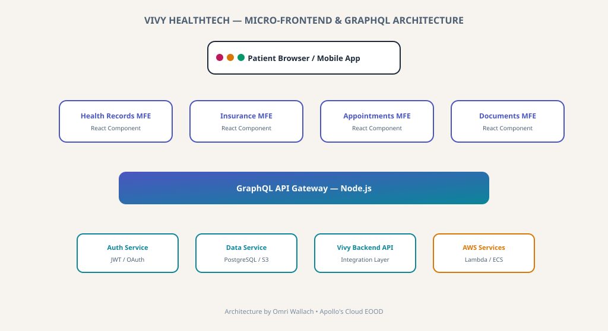

Micro-Frontend & GraphQL Architecture for Vivy HealthTech
Digital health platform with micro-frontend architecture, GraphQL API, and AWS backend. Built for Vivy HealthTech, backed by Allianz.

Vivy HealthTech — Micro-Frontend & GraphQL Architecture
Context
Vivy is a digital health platform backed by Allianz that allows patients to manage health records, appointments, and insurance documents. I built the MVP using a micro-frontend architecture with Node.js and GraphQL, seamlessly integrating with Vivy's existing healthcare backend ecosystem.
Engineering Challenges
Micro-Frontend Integration
Designing independent React micro-frontends that compose into a seamless patient experience while sharing authentication and state.
Healthcare Data Complexity
Implementing GraphQL to unify diverse healthcare data sources into a single flexible query layer.
Backend Integration
Connecting with Vivy's existing APIs while building a new Node.js backend for the MVP features.
Architectural Solutions
Micro-Frontend Architecture
Independent React components for health records, insurance, and appointments modules.
GraphQL API Layer
Node.js GraphQL server unifying data from multiple healthcare backends.
AWS Infrastructure
Lambda and ECS for scalable backend processing with S3 for document storage.
Security & Compliance
GDPR-compliant data handling with OAuth/JWT authentication flow.
Measurable Impact
Rapid MVP Delivery
Functional MVP delivered within the startup timeline requirements.
Scalable Architecture
Micro-frontend design enabled independent team scaling.
Healthcare Integration
Seamless connection to existing Vivy backend ecosystem.
Data Flexibility
GraphQL enabled efficient, flexible data queries across domains.